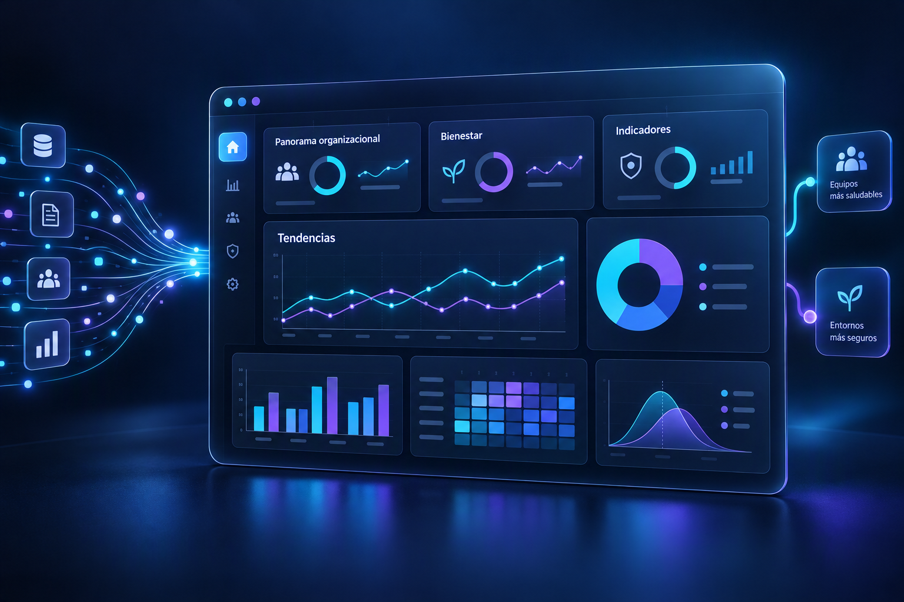
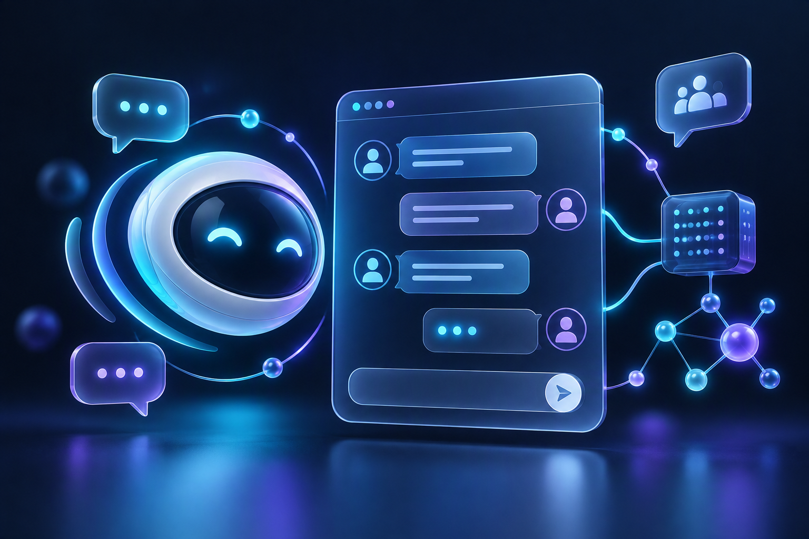
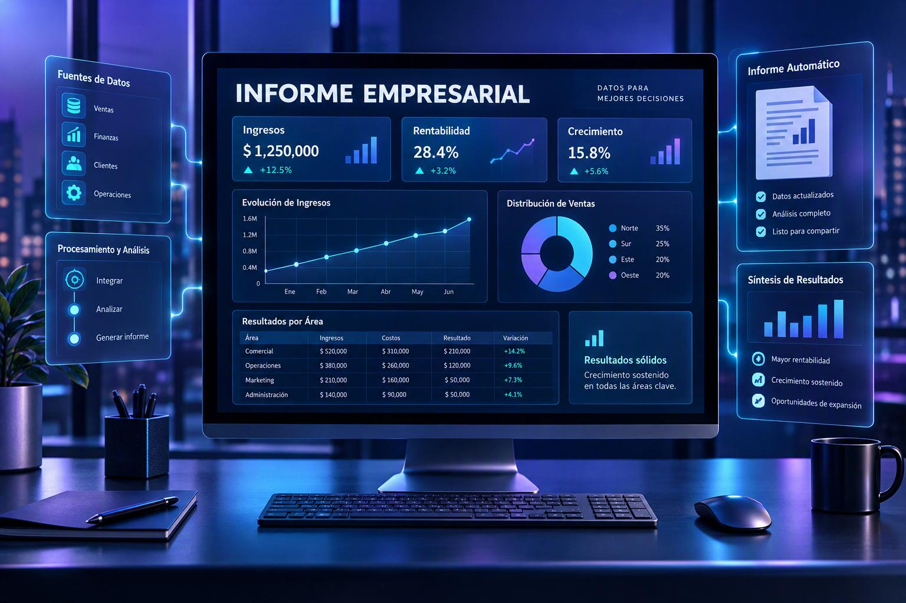
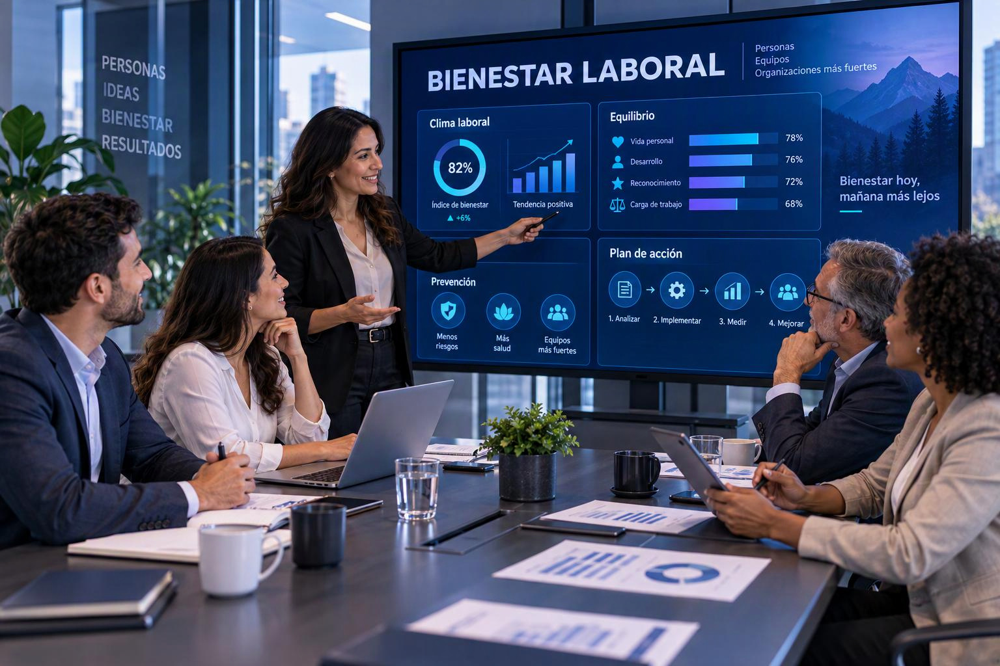

Senzia Listen
Canal conversacional para facilitar la escucha de los colaboradores y orientar la identificación inicial de situaciones laborales.
- Interacción conversacional
- Orientación laboral
- Clasificación inicial
- Derivación responsable
Integramos tecnología, inteligencia artificial y analítica de datos para ayudar a las empresas a comprender las condiciones psicosociales del trabajo y convertir la información en acciones de prevención y mejora.

Herramientas para escuchar, comprender y acompañar la gestión de los factores psicosociales en el entorno laboral.

Canal conversacional para facilitar la escucha de los colaboradores y orientar la identificación inicial de situaciones laborales.

Convierte los datos recopilados en información organizada para comprender tendencias y necesidades organizacionales.

Presenta hallazgos claros y estructurados para apoyar la comunicación de resultados y la priorización de acciones.

Acompaña la organización y el seguimiento de iniciativas preventivas y planes de mejora.
Acompañamiento especializado para interpretar información y orientar iniciativas de bienestar laboral.
Un ciclo que conecta la experiencia de las personas con decisiones organizacionales.
Conocer experiencias relacionadas con el trabajo.
Organizar la información y reconocer el contexto.
Explorar patrones, tendencias y necesidades.
Definir acciones preventivas y oportunidades.
Dar seguimiento a acciones y avances.
Promover aprendizaje y mejora continua.
Capacidades digitales con criterios de privacidad, seguridad y uso responsable.
Facilitar que los colaboradores expresen situaciones relacionadas con cargas, relaciones y claridad de rol.
Reconocer temas recurrentes y orientar conversaciones de mejora.
Registrar y seguir iniciativas preventivas, responsables y avances.
Las herramientas digitales no sustituyen evaluaciones ni actuaciones profesionales exigidas por la normativa aplicable.
Senzia es un emprendimiento tecnológico B2B enfocado en inteligencia organizacional y bienestar laboral.
# El enfoque Senzia
def transformar(experiencias):
informacion = comprender(experiencias)
hallazgos = analizar(informacion)
acciones = orientar_prevencion(hallazgos)
return hacer_seguimiento(acciones)Cuéntanos qué necesita tu empresa.